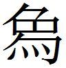
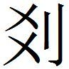
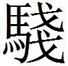

燕二
秦召燕王
秦召燕王，燕王欲往。蘇代約〔一〕 燕王曰：「楚得枳〔二〕 而國亡〔三〕 ，齊得宋而國亡〔四〕 ，齊、楚不得以有枳、宋事秦者，何也？是則有功者，秦之深讎也〔五〕 。秦取天下，非行義也，暴也。」
〔一〕 鮑本 約，猶止。
〔二〕 鮑本 屬巴郡。
〔三〕 鮑本 皆謂失地。秦昭廿七、八、九年，連拔楚郡。
〔四〕 鮑本 即此二十八年入臨淄，三十二年下七十城。
〔五〕 鮑本 言此以見克齊者，秦之所惡也。
秦之行暴於天下，正告楚曰〔一〕 ：『蜀地之甲，輕舟浮於汶〔二〕 ，乘夏水〔三〕 而下江，五日而至郢。漢中之甲，乘舟出於巴，乘夏水而〔四〕 下漢，四日而至五渚〔五〕 。寡人積甲宛，東下隨〔六〕 ，知者不及謀，勇者不及怒，寡人如射隼矣〔七〕 。王乃待天下之攻函谷，不亦遠乎？』楚王為是之故，十七年事秦。
〔一〕 鮑本 無「於」字，「正告楚曰」作「正告天下告楚曰」。札记 丕烈案：史記 作「秦之行暴，正告天下，告楚曰」，或鮑本依之改耳。
〔二〕 鮑本 汶江水出岷山。補曰：汶，眉貧反，即岷。
〔三〕 鮑本 江夏註，沔水自江別至南郡華容，為夏水。正曰：索隱 云，夏音暇，謂夏潦之水盛漲時也。下文「乘夏水」兩出，可見。
〔四〕 鮑本 無「而」字。補曰：一本「而下」。姚同。札记 丕烈案：史記 有。
〔五〕 鮑本 史 注，在洞庭。正曰：今詳本文「下漢而至五渚」，則五渚乃漢水下流。洞庭在江之南，非其地也。
〔六〕 鮑本 屬南陽。
〔七〕 鮑本 隼，祝鳩，喻易也。正曰：射隼，見易·解卦 。正義 云，隼，今之鶻也。
秦正告韓曰：『我起乎少曲〔一〕 ，一日而斷太行〔二〕 。我起乎宜陽而觸平陽〔三〕 ，二日而莫不盡繇〔四〕 。我離兩周而觸鄭，五日而國舉。』韓氏以為然，故事秦。
〔一〕 鮑本 韓地。范睢傳 ，「伐韓少曲」。補曰：本文少曲，高平。正義 云，相近高平，在懷州河陽縣西北。
〔二〕 鮑本 補曰：正義 云，太行山羊腸阪道北過韓上黨也。
〔三〕 鮑本 補曰：宜陽，見前。平陽，即近武遂，韓墳墓所在者。
〔四〕 鮑本 「繇」，「由」同。正曰：索隱 云，繇，音搖，搖動也。「我」屬下句。
秦正告魏曰：『我舉安邑，塞女戟，韓氏、太原卷〔一〕 。我〔二〕 下枳，道〔三〕 南陽、封、冀〔四〕 ，包兩周，乘夏水，浮輕舟，強弩在前，銛戈〔五〕 在後，決榮口〔六〕 ，魏無大梁；決白馬之口，魏無濟陽；決宿胥之口〔七〕 ，魏無虛、頓丘〔八〕 。陸攻則擊河內，水攻則滅大梁。』魏氏以為然，故事秦。
〔一〕 鮑本 不通此四處。正曰：安邑、女戟見前。太原在河東，時屬趙。卷，見魏策 。正義 云，卷，猶斷絕，軌免反。太原當為太行。蓋曰秦舉魏之安邑，塞魏之女戟，則韓氏、太行斷絕也。按趙策 ，秦舉安邑而塞女戟，韓氏、太原絕。正義 以「卷」為「絕」，據此。
〔二〕 姚本 舊無「我」字，曾有。鮑本 無「我」字。
〔三〕 鮑本 「枳」作「軹」，「道」下復有「道」字。道，道所由也。補曰：按枳道即河內軹。「枳」、「軹」字通。札记 丕烈案：史記 作「我下軹，道南陽」。索隱 以為言「道」者，衍字。今詳其文，乃「下枳」句絕，「道」字下屬，復有者誤。
〔四〕 鮑本 後志 ，河東皮氏有冀亭，註引此。補曰：南陽即修武。封，封陵，杜預云，在蒲州。
〔五〕 鮑本 「包」上有「兼」字，「戈」作「戟」。札记 丕烈案：史記 作「錟戈」。
〔六〕 姚本 一作「滎陽之口」。鮑本 「榮」作「滎」。滎澤之口。補曰：索隱 曰，滎澤口與今汴河口通，其水深，可以灌大梁。公子無忌亦云然。大事記 ，灌大梁之策，戰國以來，人皆知之，秦卒用此策 。
〔七〕 鮑本 徐註，紀年 曰，魏救山塞集胥口。
〔八〕 鮑本 補曰：大事記 云，水經 註，河水舊在白馬縣南，決通濟陽、黃溝。白馬，本衛之曹邑，今滑州縣。史 作「外黃、濟陽」。大事記 作「黃、濟陽」。說又見秦策 。宿胥、虛、頓丘，並見秦、魏策 。
秦欲攻安邑，恐齊救之〔一〕 ，則以宋委於齊，曰：『宋王無道，為木人以寫〔二〕 寡人，射其面。寡人地絕兵遠，不能攻也。王苟能破宋有之，寡人如自得之。』已得安邑，塞女戟，因以破宋為齊罪。
〔一〕 鮑本 「救」作「據」。札记 丕烈案：史記 作「救」。
〔二〕 鮑本 「寫」作「象」。補曰：一本作「寫」，蓋古「象」字作「

」訛也。札记 丕烈案：史記 作「寫」，「寫」字是。秦欲攻齊〔一〕 ，恐天下救之，則以齊委於天下曰：『齊王〔二〕 四與寡人約，四欺寡人，必〔三〕 率天下以攻寡人者三。有齊無秦，無齊有秦，必伐〔四〕 之，必亡之！』已得宜陽、少曲，致藺、石〔五〕 ，因以破齊為天下罪。
〔一〕 鮑本 「齊」作「韓」。
〔二〕 鮑本 「王」作「人」。補曰：一本「人」作「王」。姚同。札记 丕烈案：史記 作「王」。
〔三〕 鮑本 必，言攻之決。
〔四〕 姚本 劉作「代」。
〔五〕 姚本 三本同作「君」。鮑本 「石」上補「離」字。補曰：「藺、離石」見前。據文恐有「離」字。姚註，「石」字三本同作「君」，詳此當缺。札记 丕烈案：史記 作「致藺、石」。
秦欲攻魏，重楚〔一〕 ，則以南陽〔二〕 委於楚曰：『寡人固與韓且絕矣！殘均陵〔三〕 ，塞鄳隘〔四〕 ，苟利於楚，寡人如自有之。』魏棄與國而合於秦，因以塞鄳隘為楚罪。
〔一〕 鮑本 恐楚擊其後。
〔二〕 鮑本 補曰：鄧之南陽。
〔三〕 鮑本 地缺。正曰：正義 云，均州故城在隨州西南，蓋均陵也。
〔四〕 鮑本 「鄳」作「黽」。補曰：見楚策 。札记 丕烈案：史記 作「鄳」，下同。
兵困於林中〔一〕 ，重燕、趙，以膠東〔二〕 委於燕，以濟西委於趙。趙〔三〕 得講於魏，至〔四〕 公子延〔五〕 ，因犀首屬行而〔六〕 攻趙。兵傷於離石〔七〕 ，遇敗於馬陵，而重魏，則以葉、蔡〔八〕 委於魏。已得講於趙，則劫魏，魏不為割。困則使太后、穰侯為和，羸則兼欺舅〔九〕 與母。適〔一〇〕 燕者曰：『以膠東。』適趙者曰：『以濟西。』適魏者曰：『以葉、蔡。』適楚者曰：『以塞鄳隘〔一一〕 。』適齊者曰：『以宋。』此〔一二〕 必令其言如循環〔一三〕 ，用兵如刺蜚繡〔一四〕 ，母不能制〔一五〕 ，舅不能約。龍賈之戰〔一六〕 ，岸門之戰，封陸之戰〔一七〕 ，高商之戰〔一八〕 ，趙莊之戰〔一九〕 ，秦之所殺三晉之民數百萬。今其生者，皆死秦之孤也〔二〇〕 。西河之外、上雒之埊、三川，晉國之禍，三晉之半〔二一〕 。秦禍如此其大，而燕、趙之〔二二〕 秦者，皆以爭事秦說〔二三〕 其主，此臣之所大患。
〔一〕 鮑本 補曰：見魏策 。
〔二〕 鮑本 膠東國。故齊國。項紀 註，即墨也。
〔三〕 鮑本 「趙」作「己」。札记 丕烈案：史記 作「趙」。
〔四〕 鮑本 「至」作「質」。補曰：索隱 云，當改「質」。
〔五〕 鮑本 秦子。正曰：魏子。
〔六〕 鮑本 無「屬行而」三字。補曰：一本「首」下有「屬行而」三字，史、姚同。索隱 曰，謂連兵相屬也。行，胡郎反。
〔七〕 鮑本 史 「離石」作「譙石」。
〔八〕 姚本 曾改「馬陵」作「陽馬」。曾改「葉、蔡」作「南陽」。鮑本 馬陵，葉、蔡，并見前。史 「馬陵」作「陽馬」。索隱 云，並趙地名。
〔九〕 鮑本 「羸」作「贏」。贏，謂勝。舅，謂穰侯。札记 丕烈案：史記 作「嬴」。
〔一〇〕 鮑本 「適」，「謫」同。補曰：適，即上所謂因以為罪者。
〔一一〕 鮑本 「隘」作「阨」。札记 丕烈案：史記 作「阨」。
〔一二〕 鮑本 無「此」字。札记 丕烈案：史記 有。
〔一三〕 鮑本 補曰：言其無窮不可致詰也。
〔一四〕 姚本 錢本添入「蜚」字。鮑本 「蜚」下無「繡」字。蜚，集韻 ，蟲名。喻易也。補曰：蜚，匪微反，又上、去二音。一本「刺繡」。札记 今本脫「繡」字。丕烈案：史記 作「刺蜚」，此必策 文作「繡」，史記 作「蜚」，遂兩存也。今本刪去「繡」字者誤。
〔一五〕 鮑本 「制」作「知」。補曰：一本「知」作「制」。札记 丕烈案：史記 作「制」。
〔一六〕 鮑本 魏襄五年，秦拔我龍賈軍。補曰：此據世家 、年表 ，在二年。大事記 從年表 ，云魏惠王後二年。
〔一七〕 鮑本 「陸」作「陵」。魏哀十六年，秦敗我封陵。忠岸亭在穎。韓記 注，岸門，封陵，亭名。然則封陵亦屬穎川。正曰：哀當作襄。封陵，見封丘註。補曰：岸門之戰，赧王元年，當韓宣惠王十九年。札记 丕烈案：史記 作「陵」。
〔一八〕 姚本 錢本無此上八字。鮑本 史 不書。
〔一九〕 鮑本 趙肅侯十三年，趙莊與秦戰，死河西。
〔二〇〕 鮑本 補曰：死於秦者之孤。
〔二一〕 鮑本 言上三地被禍，居晉國之半。正曰：西河、上雒，魏地。三川，韓地。言秦已得三晉之半也。
〔二二〕 鮑本 補曰：「之」下恐有缺字。札记 丕烈案：史記 文正同，吳氏說未是。
〔二三〕 姚本 舊本作「議」。
燕昭王不行，蘇代復重於燕。燕反約諸侯從親，如蘇秦時，或從或不〔一〕 ，而天下由此宗蘇氏之從約。代、厲皆以壽死，名顯諸侯。〔二〕
〔一〕 鮑本 「不」作「否」。札记 今本「不」作「否」。丕烈案：史記 作「不」。
〔二〕 鮑本 代傳 有，在伐齊事後。彪謂：秦之所以正告諸侯及其用詐，皆愚弄之也。而諸侯莫省，獨一燕昭知之，然亦不久死矣。彪故曰，秦橫之成，天幸也。補曰：文甚明快。
蘇代為奉陽君說燕於趙以伐齊〔校一〕
〔校一〕 姚本 蘇代為奉陽君說燕於趙以伐齊 與奉陽君告朱讙與趙足 分列二篇，鮑本合為一篇。據文義，從鮑本。
蘇代為〔一〕 奉陽君〔二〕 說燕於趙以伐齊，奉陽君不聽。乃入齊〔三〕 惡趙，令齊絕於趙。齊已絕於趙，因之燕，謂昭王曰：「韓為謂臣曰：『人告奉陽君曰：使齊不信趙者，蘇子也；今〔四〕 齊王〔五〕 召蜀子〔六〕 使不伐宋〔七〕 ，蘇子也；與齊王謀〔八〕 道取秦以謀趙者，蘇子也；令齊守趙之質子以甲者，又蘇子也。請告子〔九〕 以請齊，果〔一〇〕 以守趙之質子以甲，吾必守子以甲〔一一〕 。』其言惡矣。雖然，王勿患也〔一二〕 。臣故知入齊之有趙累也。〔一三〕 出為之以成所欲〔一四〕 ，臣死而齊大惡於趙，臣猶生也。令〔一五〕 齊、趙絕，可大紛已〔一六〕 。持〔一七〕 臣非張孟談也，使臣也如張孟談也，齊、趙必有為智伯者矣。
〔一〕 鮑本 「為」作「謂」。
〔二〕 鮑本 此亦其後襲稱。正曰：說見趙策 。
〔三〕 鮑本 代入。
〔四〕 鮑本 「今」作「令」。
〔五〕 鮑本 閔。
〔六〕 鮑本 齊將。正曰：無考。
〔七〕 鮑本 「宋」下補「者」字。
〔八〕 鮑本 「道」作「遁」。遁，逃去也，言避秦兵。取，言與之合。正曰：即此策 下文所云，「臣以為不若逃而去之，以韓、魏循自齊，而為之取秦，深結趙以勤之」。
〔九〕 鮑本 告子，名不害，代請之使為己請齊。正曰：無據，妄引。韓為謂代舉或人告奉陽君之言。請者，或人之請，為趙言於齊也。
〔一〇〕 鮑本 果者，必欲告子如是。
〔一一〕 鮑本 言告子不聽則然。正曰：謂告子，齊果守趙質子以甲，則吾將守子以甲。
〔一二〕 鮑本 人所告奉陽之言，於代為惡，燕王善代，必患之。故代告王以無患，為其亂齊、趙，所以利燕。
〔一三〕 鮑本 言趙惡代。
〔一四〕 鮑本 出者，奮不顧也，言知其有累而奮為之。欲，謂利燕。
〔一五〕 鮑本 「令」作「今」。
〔一六〕 鮑本 紛，亂也。
〔一七〕 鮑本 持，猶使。補曰：「持」字疑「特」。
奉陽君告朱讙與趙足曰〔一〕 ：『齊王使公王曰〔二〕 命說〔三〕 曰，必不反韓珉，今召之矣〔四〕 。必不任蘇子以事，今封而相之。令〔五〕 不合燕，今以燕為上交。吾所恃者順也〔六〕 ，今其言變有甚於其父，順始與蘇子為讎。見之知〔七〕 無厲〔八〕 ，今賢之兩之〔九〕 ，已矣，吾無齊矣〔一〇〕 ！』
〔一〕 鮑本 代稱奉陽之言，然二皆趙人。
〔二〕 鮑本 「王」作「玉」。齊人姓名。正曰：一本「公王」。按字書，三畫中近上者，于方反；三畫勻者，虞欲反。隸始加點，以別王字。新序 有公玉丹，史公玉帶，則公玉，姓也。此疑有缺誤。札记 丕烈案：誤字，此字是其名。
〔三〕 鮑本 奉陽君。補曰：「說」即「兌」之訛。說見趙策 。
〔四〕 鮑本 言故反前。下類此。
〔五〕 鮑本 「令」作「必」。札记 「令」，今本誤「今」。
〔六〕 鮑本 公玉父名。正曰：無考。鮑因下言「有甚於其父」，遂云爾。按趙策 齊欲攻宋章，以三晉劫秦，使順也甘之，恐即此人。
〔七〕 鮑本 「知」作「如」。札记 丕烈案：此當有訛。
〔八〕 鮑本 補曰：無害也。
〔九〕 鮑本 兩，謂封與相。正曰：賢之，謂以代為賢。兩之，謂與之並處。
〔一〇〕 鮑本 并述奉陽之言。
奉陽君之怒甚矣〔一〕 。如齊王王〔二〕 之不信趙，而小人奉陽君也〔三〕 ，因是而倍〔四〕 之。不以今時大紛之，解而復合，則後不可柰何也。故齊、趙之合苟可循〔五〕 也，死不足以為臣患〔六〕 ；逃不足以為臣恥；為諸侯，不足以為臣榮；被髮自漆為厲，不足以為臣辱〔七〕 。然而臣有患也，臣死而齊、趙不循，惡交分於臣也〔八〕 ，而後相效〔九〕 ，是臣之患也〔一〇〕 。若臣死而必相攻也〔一一〕 ，臣必勉之而求死焉。堯、舜之賢而死，禹、湯之知而死，孟賁之勇而死，烏獲之力而死，生之物固有不死者乎？在必然之物〔一二〕 以成所欲，王何疑焉？
〔一〕 鮑本 此代自言。
〔二〕 鮑本 衍「王」字。補曰：衍字。
〔三〕 鮑本 待之為小人。
〔四〕 鮑本 音背，言燕宜然。正曰：言齊因是倍趙。
〔五〕 姚本 錢一作「脩」。鮑本 循，言順燕。
〔六〕 鮑本 代本以二國之合，必不順燕。今乃合而順之，故有死、逃之罪。正曰：言二國之合，必害於燕，苟順而無害，國之利也，故己之死、逃、榮、辱，皆不足論。
〔七〕 鮑本 補曰：厲，史音賴，見秦策 。「死不足以為臣患」及「堯、舜之賢而死」兩節，與秦策 范睢說同。
〔八〕 鮑本 燕以二國可因，而代不欲，則三國皆惡代矣。然二國卒不可因，則代之惡，皆有所分。交，猶皆。
〔九〕 鮑本 「效」作「效」。效，後人見其不可因而效己。
〔一〇〕 鮑本 患其後時。
〔一一〕 鮑本 齊、趙相攻。
〔一二〕 鮑本 死者，人之必然。
臣以為不若逃而去之〔一〕 。臣以韓、魏循自〔二〕 齊〔三〕 ，而為之取秦〔四〕 ，深結趙以勁之〔五〕 。如是則近於相攻〔六〕 。臣雖為之累燕〔七〕 ，奉陽君告朱讙〔八〕 曰：『蘇子怒於燕王之不以吾故〔九〕 ，弗予相，又不予卿也〔一〇〕 ，殆無燕矣。』其疑至於此〔一一〕 ，故臣雖為之不累燕〔一二〕 ，又不欲〔一三〕 王。伊尹再逃湯而之桀〔一四〕 ，再逃桀而之湯，果與鳴條之戰，而以湯為天子。伍子胥逃楚而之吳，果與伯〔一五〕 舉之戰，而報其父之讎。今臣逃而紛齊、趙，始可著於春秋 。且舉大事者，孰不逃？桓公之難，管仲逃於魯；陽虎之難，孔子逃於衛〔一六〕 ；張儀逃於楚〔一七〕 ；白珪逃於秦〔一八〕 ；望諸〔一九〕 相中山也使趙，趙劫之求埊，望諸攻關而出逃〔二〇〕 ；外孫之難〔二一〕 ，薛公釋戴〔二二〕 逃出於關〔二三〕 ，三晉稱以為士〔二四〕 。故舉大事，逃不足以為辱矣。
〔一〕 鮑本 無「為」字。詐以罪逃去。補曰：一本此有「為」字。
〔二〕 姚本 一作「日」。
〔三〕 鮑本 言逃燕，則自韓、魏順行至齊。
〔四〕 鮑本 言勁齊以怒趙。
〔五〕 鮑本 「勁」作「勤」。此勁趙以怒齊也。結，亦以韓、魏、趙自燕結之。勤，猶厚。
〔六〕 鮑本 「攻」下有「也」字。
〔七〕 鮑本 「累」上補「不」字。正曰：「臣雖為之累燕」，下文引奉陽君之言而釋之曰，臣雖為之不累燕。
〔八〕 鮑本 亦代稱之。
〔九〕 鮑本 以，用也。吾，指奉陽君。
〔一〇〕 鮑本 兩「予」字作「子」。子，謂讙。正曰：子，謂代。補曰：一本「不予相，又不予卿也」。予，亦為蘇子自予也。
〔一一〕 鮑本 燕王善代，而奉陽謂其怒燕者，疑也。
〔一二〕 鮑本 疑代怒燕，故代雖為燕紛二國，二國不怨燕也。
〔一三〕 鮑本 欲，猶須也。言其自相攻，不須燕。
〔一四〕 姚本 舊無「再逃湯而之桀」六字。曾、錢有。鮑本 無「再逃湯而之桀」六字。補曰：一本此句上有「再逃湯而之桀」六字，姚本同。
〔一五〕 鮑本 「伯」作「柏」。正曰：古字通。古今人表 柏虎、柏益、柏樂之類。
〔一六〕 鮑本 定八年，陽虎作難，十四年，孔子乃適衛，不如此所云。札记 今本「虎」誤「貨」。
〔一七〕 鮑本 傳 不書。正曰：即儀至楚之事。
〔一八〕 鮑本 未詳。
〔一九〕 鮑本 此與樂毅同號。
〔二〇〕 鮑本 無「逃」字。
〔二一〕 鮑本 未詳。
〔二二〕 鮑本 「戴」作「載」。不乘車也。
〔二三〕 鮑本 齊湣二十五年，田文入秦，秦因欲殺之，因秦幸姬得出，馳去，變姓名出關。
〔二四〕 鮑本 「士」上補「好」字。太史公曰，好客自喜。補曰：「士」上恐有缺字。札记 丕烈案：此無缺字，吳說非。
卒絕齊於趙，趙合於燕以攻齊，敗之。〔一〕
〔一〕 鮑本 補曰：此策 文多未詳，注多未妥。
蘇代為燕說齊
蘇代為燕說齊，未見齊王〔一〕 ，先說淳于髡曰：「人有賣駿馬者，比〔二〕 三旦立市，人莫之知。往見伯樂曰：『臣有駿馬，欲賣之，比三旦立於市，人莫與言，願〔三〕 子還而視之，去而顧之〔四〕 ，臣請獻一朝之賈〔五〕 。』伯樂乃還而視之，去而顧之，一旦而馬價十倍。今臣〔六〕 欲以駿馬〔七〕 見於王，莫為臣先後者〔八〕 ，足下有意為臣伯樂乎？臣請獻白璧一雙，黃金千鎰，以為馬食〔九〕 。」淳于髡曰：「謹聞命矣。」入言之王而見之，齊王大說蘇子。
〔一〕 鮑本 閔。
〔二〕 鮑本 比，猶連。
〔三〕 鮑本 無「願」字。
〔四〕 鮑本 顧，反視。補曰：還，當音旋，義同。
〔五〕 鮑本 「賈」作「費」。補曰：疑「費」字。
〔六〕 鮑本 「臣」下有「之」字。補曰：一本無。姚同。
〔七〕 鮑本 馬，自喻也。
〔八〕 鮑本 為之助也。
〔九〕 鮑本 自喻為馬，則此所獻，馬之食也。正曰：獻此以為馬之食。
蘇代自齊使人謂燕昭王
蘇代自齊使人謂燕昭王曰：「臣聞〔一〕 離齊、趙，齊、趙已孤矣，王何不出兵以攻齊？臣請王弱之。」燕乃伐齊攻晉〔二〕 。
〔一〕 鮑本 「聞」作「間」。間，猶傾也。補曰：當作「間」。正曰：間，去聲，致隙曰間。間，隔也。
〔二〕 鮑本 疑兵也，實合魏而陽攻以疑齊。正曰：晉，地名，下文云「晉下」，可見。
令人〔一〕 謂閔王曰：「燕之攻齊也，欲以復振古〔二〕 埊也。燕兵在晉而不進，則是兵弱而計疑也。王何不令蘇子將而應燕乎？夫以蘇子之賢，將而應弱燕，燕破必矣。燕破則趙不敢不聽，是王破燕而服趙也。」閔王曰：「善。」乃謂蘇子曰：「燕兵在晉，今寡人發兵應之，願子為寡人為之將。」對曰：「臣之於兵，何足以當之，王其改舉〔三〕 。王使臣也，是敗王之兵，而以臣遺燕也。戰不勝，不可振〔四〕 也。」王曰：「行，寡人知子矣。」
〔一〕 鮑本 代令之。
〔二〕 鮑本 「古」作「故」。振，舉也。蓋欲復王噲所失。
〔三〕 鮑本 別用他將。
〔四〕 鮑本 振，救也。
蘇子遂將，而與燕人戰於晉下〔一〕 ，齊軍敗。燕得甲首二萬人。蘇子收〔二〕 其餘兵，以守陽城，而報於閔王曰：「王過舉，令臣應燕。今軍敗亡二萬人，臣有斧質之罪，請自歸於吏以戮。」閔王曰：「此寡人之過也，子無以為罪。」
〔一〕 鮑本 晉之下地。
〔二〕 鮑本 「收」作「以」。
明日又使燕攻陽城及狸〔一〕 。又使人謂閔王曰：「日者齊不勝於晉下，此非兵之過，齊不幸而燕有〔二〕 天幸也。今燕又攻陽城及狸，是以天幸自為功也。王復使蘇子應之，蘇子先敗王之兵，其後必務以勝報王矣。」王曰：「善。」乃復使蘇子，蘇子固辭，王不聽。遂將以與燕戰於陽城。燕人大勝，得首三萬。齊君臣不親，百姓離心。燕因使樂毅大起兵伐齊，破之。〔三〕
〔一〕 鮑本 燕地也。趙悼襄九年，攻燕取狸、陽城。正曰：據此策 ，則燕取之於齊者也。大事記 引正義 云，燕無狸陽，疑字誤，當作漁陽。按此文兩云陽城及狸，則正義 亦未可據。
〔二〕 姚本 曾作「有」。
〔三〕 鮑本 彪謂：蘇代之於燕、齊，皆嘗隙而復善，其情禮均也。而獨為燕圖齊之深，何哉？昭王賢也。雖然，糜爛人之民人以行其說，而奉其所賢，仁者不為也，獨不念嘗委質於齊乎？補曰：蘇代傾詐不義，一至於此，其罪浮於張儀矣。
蘇代自齊獻書於燕王
蘇代自齊獻書於燕王曰：「臣之行也，固知將有口事〔一〕 ，故獻御書而行〔二〕 ，曰：『臣貴於齊，燕大夫將不信臣；臣賤，將輕臣；臣用，將多望〔三〕 於臣；齊有不善〔四〕 ，將歸罪於臣；天下不攻齊，將曰善為齊謀；天下攻齊，將與齊兼鄮〔五〕 臣。臣之所重處重卯也〔六〕 。』王謂臣曰：『吾必不聽眾口與讒言，吾信汝也，猶剗

者〔七〕 也。上可以得用於齊，次可以得信於下，苟無死，女無不為也，以〔八〕 女自信可也。』與之言曰〔九〕 ：『去燕之齊可也，期〔一〇〕 於成事而已。』臣受令以任齊〔一一〕 ，及五年。齊數出兵，未嘗謀燕。齊、趙之交，一合一離，燕王〔一二〕 不〔一三〕 與齊謀趙，則與趙謀齊〔一四〕 。齊之信燕也，至於虛北埊〔一五〕 行其兵〔一六〕 。今王信田伐與參、去疾之言〔一七〕 ，且〔一八〕 攻齊，使齊犬馬
〔一九〕 而不言燕。今王又使慶〔二〇〕 令臣曰：『吾欲用所善。』王苟欲用之〔二一〕 ，則臣請為王事之。王欲醳〔二二〕 臣剸〔二三〕 任所善，則臣請歸醳事。臣苟得見，則盈願。」〔二四〕〔一〕 鮑本 言人譖之。
〔二〕 鮑本 獻侍御者以書。
〔三〕 鮑本 望，猶責。
〔四〕 鮑本 謂惡燕。
〔五〕 鮑本 「鄮」作「貿」。貿，猶賣。補曰：貿，當作買，互易也。字增「邑」，訛。
〔六〕 鮑本 「卯」作「留」。重，猶難也。留，謂處於齊為難。正曰：一本「卯」作「卵」。據此，則「重」當平聲。重卵，猶言累卵，謂己處危也。上文恐多「重」字。
〔七〕 鮑本 「剗 者」作「列眉」。言無可疑。補曰：「列眉」，未詳。一本「猶剗 者也」。龍龕手鑑 ，「 」，古「剗」字。愚謂，即刈字也。剗刈者，斬斷果決之意。
〔八〕 鮑本 以，猶由。
〔九〕 鮑本 王與之。
〔一〇〕 鮑本 「期」作「其」。補曰：當作「期」字，通借。
〔一一〕 鮑本 得任於齊。正曰：以齊為任。
〔一二〕 鮑本 衍「王」字。
〔一三〕 鮑本 無「不」字。正曰：一本「不與齊謀趙，則與趙謀齊」，疑「王」即「不」字之訛。
〔一四〕 鮑本 燕與齊謀趙，實欲離齊於趙，代因與趙謀齊，以成燕之謀。正曰：見上。
〔一五〕 鮑本 虛，言不設備。齊北近燕。
〔一六〕 鮑本 以北兵伐他國。
〔一七〕 鮑本 三人讒代者。
〔一八〕 鮑本 且，辭也。
〔一九〕 鮑本 無「 」字。犬馬，言己賤齊為之也，又不泄燕之謀。補曰：一本「犬馬 」，姚同。字書無「 」字，恐即「賤」。案：此句帛書作「使齊大戒而不信燕」
〔二〇〕 鮑本 燕臣名。
〔二一〕 鮑本 「王苟欲」下有「用所善王欲」五字。補曰：姚本 「王苟欲用之」，無中間五字，文義為勝。
〔二二〕 鮑本 「醳」，「釋」同，見鄒忌說琴 。補曰：魏世家 ，如耳云，「以秦醳衛」。張儀傳 ，「醳之」。索隱 云，古「釋」字。
〔二三〕 鮑本 「剸」作「專」。補曰：「專」字訛。札记 丕烈案：「剚」、「專」同字，猶「醳」、「釋」同字也。
〔二四〕 鮑本 彪謂：為人間者，均有此六患，非燕昭之明，代其危哉！功成矣，猶不能為此者，況他人乎？代之謀齊，亦異乎豫讓之於趙矣。彼哉！彼哉！補曰：此策 蓋代在齊，而或有疑之於王者，故代以書自白，文多未詳。燕昭即位，志復齊讎，非一日矣。樂毅以趙亂適衛至燕，在十七年之後。又十年，始合五國以破齊。方其患齊之強，志未逞也。蘇代之徒，為之間齊，離趙之交，激秦之怒，勸之以伐宋，驕其兵而罷其師，齊卒以亡，代有力焉，而世不數何也？蓋毅之為燕約結，信義服人，卒用此以勝，何假乎代之為哉？代之傾詐反覆，效用於燕，亦昭王之賢明有以御之，非倚以成功也。
陳翠合齊燕
陳翠合齊、燕，將令燕王之弟為質於齊〔一〕 ，燕王許諾。太后聞之大怒曰：「陳公不能為人之國，亦則〔二〕 已矣，焉有離人子母者，老婦欲得志焉〔三〕 。」
〔一〕 鮑本 代傳 ，說王噲已，乃使一子質齊。正曰：鮑因此指為王噲事。然史 云一子質齊，而此云燕王之弟，則不合矣。其時未可定。
〔二〕 鮑本 「亦則」作「則亦」。
〔三〕 鮑本 以殺辱之為快。
陳翠欲見太后，王曰：「太后方怒子，子其待之。」陳翠曰：「無害也。」遂入見太后曰：「何臞〔一〕 也？」太后曰：「賴得先王〔二〕 鴈鶩之餘食，不宜臞〔三〕 。臞者，憂公子之且為質於齊也。」
〔一〕 鮑本 臞，少肉。
〔二〕 札记 今本「王」誤「生」。
〔三〕 鮑本 「臞」下有「者」字。補曰：姚本 無「者」字。
陳翠曰：「人主之愛子也，不如布衣之甚也。非徒不愛子也，又不愛丈夫子獨甚。」太后曰：「何也？」對曰：「太后嫁女諸侯，奉以千金，齎埊百里，以為人之終也〔一〕 。今王願封公子，百官持職〔二〕 ，群臣效忠，曰：『公子無功不當封。』今王之以公子為質也，且以為公子功而封之〔三〕 也。太〔四〕 后弗聽，臣是以知人主之不愛丈夫子獨甚也。且太后與王幸而在，故公子貴；太后千秋之後，王棄國家，而太子即位，公子賤於布衣。故非及太后與王封公子，則公子終身不封矣！」
〔一〕 鮑本 嫁則女之事畢矣，封亦公子之終也。
〔二〕 鮑本 持，猶守也。封無功者，爭之職也。
〔三〕 鮑本 無「而封之」三字。補曰：一本「且以為公子功而封之也」。姚同。
〔四〕 鮑本 「太」上有「而」字。
太后曰：「老婦不知長者之計。」乃命公子束車制衣為行具。〔一〕
〔一〕 鮑本 補曰：此與觸讋諫趙威后同。戰國 所載事多如此，然觸讋言尤婉切，所以人多稱之。
燕昭王且與天下伐齊
燕昭王且與天下伐齊，而有齊人仕於燕者，昭王召而謂之曰：「寡人且與天下伐齊，旦暮出令矣。子必爭之，爭之而不聽，子因去而之齊。寡人有時復合和也〔一〕 ，且以因子而事齊。」當此〔二〕 之時也，燕、齊不兩立，然而常獨欲有復收〔三〕 之之志若此也。〔四〕
〔一〕 鮑本 無「和也」二字。預言不勝與齊合。補曰：一本「復合和也」。
〔二〕 鮑本 補曰：「當此」以下，紀述者之辭。
〔三〕 鮑本 收，猶合。不兩立，則不可復合，而不能無合之之志。
〔四〕 鮑本 彪謂：此少年狡獪之行，小人患失之類，而燕昭為之，此其所以不王也。
燕饑趙將伐之
燕饑，趙將伐之。楚使將軍之燕，過魏，見趙恢。趙恢曰：「使除患無至〔一〕 ，易於救患。伍子胥、宮之奇不用〔二〕 ，燭之武、〔三〕 張孟談〔四〕 受大賞。是故謀者皆從事於除患之道〔五〕 ，而先〔六〕 使除患無至者。今予〔七〕 以百金送公〔八〕 也，不如以言。公聽吾言而說趙王〔九〕 曰：『昔者吳伐齊，為其饑也，伐齊未必勝也，而弱越乘其弊以霸。今王之伐燕也，亦為其饑也，伐之未必勝，而強秦將以兵承〔一〇〕 王之西〔一一〕 ，是使弱趙居強吳之處，而使強秦處弱越之所以霸也。願王之熟計之也。』」
〔一〕 鮑本 除之使不至。
〔二〕 鮑本 此除患者。
〔三〕 鮑本 僖三十年，晉、秦圍鄭，佚之狐言於鄭伯曰，「國危矣，若使燭之武見秦君，師必退」。之武見秦伯曰，「鄭知亡矣，而有益於君，敢以煩執事。越國以鄙遠，君知其難也，焉用亡鄭以倍鄰？鄰之厚，君之薄也」。秦伯說，乃還。
〔四〕 鮑本 皆救患者。
〔五〕 鮑本 「道」作「遺」，下有「者」字。謂救患者。補曰：一本「遺」作「道」，下無「者」字。姚同，義是。
〔六〕 鮑本 「先」作「無」。補曰：上疑有闕文。
〔七〕 鮑本 「予」作「與」。補曰：一本作「予」。姚同。
〔八〕 鮑本 公，謂楚使。
〔九〕 鮑本 惠文。
〔一〇〕 鮑本 「承」作「乘」。正曰：此書「乘」、「承」通。後昌國君 章有。
〔一一〕 姚本 曾、劉改「西」作「北」。
使者乃以說趙王，趙王大悅，乃止。燕昭王聞之，乃封之以地〔一〕 。
〔一〕 鮑本 封恢也。恢蓋趙之仕魏而為燕者，為燕亦所以為魏也。正曰：無據。
昌國君樂毅為燕昭王合五國之兵而攻齊
昌國君樂毅為燕昭王合五國之兵〔一〕 而攻齊，下七十餘城，盡郡縣之以屬燕。三城未下〔二〕 ，而燕昭王死。惠王即位，用齊人反間，疑樂毅，而使騎劫代之將。樂毅奔趙，趙封以為望諸君〔三〕 。齊田單欺〔四〕 詐騎劫，卒敗燕軍，復收七十城以復齊。燕王悔，懼趙用樂毅承〔五〕 燕之弊以伐燕。
〔一〕 鮑本 傳 云，并合趙、楚、韓、魏、燕之兵。補曰：正義 云，故昌城在淄州淄川縣東北。
〔二〕 姚本 聊、即墨、莒。鮑本 補曰：毅傳 ，唯莒、即墨未下。燕世家 云，聊、莒、即墨未下。蓋因燕將守聊城不下之事而誤。說見齊策 。
〔三〕 鮑本 補曰：史 ，趙封毅於觀津，號望諸君。索隱 云，望諸，澤名，在齊，蓋趙有之，故號焉。
〔四〕 鮑本 無「欺」字。丕烈案：無者當是。
〔五〕 鮑本 「承」作「乘」。正曰：說見上。札记 丕烈案：史記 作「乘」。
燕王乃使人讓樂毅，且謝之曰：「先王舉國而委將軍，將軍為燕破齊，報先王之讎，天下莫不振動，寡人豈敢一日而忘將軍之功哉！會先王棄群臣，寡人新即位，左右誤寡人。寡人之使騎劫代將軍者，〔一〕 為將軍久暴〔二〕 露於外，故召將軍且休計事。將軍過聽，以與寡人有郄〔三〕 ，遂捐燕而歸趙。將軍自為計則可矣，而亦何以報先王之所以遇將軍之意乎？」〔四〕
〔一〕 姚本 曾本添「者」字。鮑本 無「者」字。札记 丕烈案：史記 無。
〔二〕 鮑本 「暴」，「曝」同。
〔三〕 鮑本 「郄」作「隙」。隙，不合也。札记 丕烈案：史記 作「隙」。
〔四〕 鮑本 補曰：自「先王舉國」止此一節，恐當在後章燕王書「寡人不佞」云云之上。餘說見彼章。
望諸君乃使人獻書報燕王曰：「臣不佞，不能奉承先王之教，以順左右之心，恐抵斧質之罪，以傷先王之明，而又害於足下之義〔一〕 ，故遁逃奔趙。自負〔二〕 以不肖之罪，故不敢為辭說。今王使使者數之罪，臣恐侍御者之不察先王之所以畜幸〔三〕 臣之理，而又不白〔四〕 於臣之所以事先王之心，故敢以書對。」
〔一〕 鮑本 無罪而殺毅，非義也。
〔二〕 鮑本 負，言荷罪在身。
〔三〕 鮑本 畜，養也。幸，親愛之。
〔四〕 鮑本 白，猶明。
臣聞賢聖之君，不以祿私其親，功多者授之；不以官隨其愛，能當之〔一〕 者處之。故察能而授官者，成功之君也；論行而結交者，立名之士也。臣以所學者觀之，先王之舉錯，有高世之心，故假節於魏王〔二〕 ，而以身得察於燕〔三〕 。先王過舉，擢之乎賓客之中，而立之乎群臣之上，不謀於父兄，而使臣為亞〔四〕 卿。臣自以為奉令承教，可以幸無罪矣，故受命而不辭。
〔一〕 鮑本 無「之」字。
〔二〕 鮑本 時諸侯不通，出關則以節假之，故上言毅自魏往見王。正曰：毅傳 ，毅為魏昭王使燕，燕王以客禮待之。毅辭讓，遂委質為臣。正義 云，假魏節使燕。
〔三〕 鮑本 補曰：毅傳 ，趙人，因沙丘之亂，適魏至燕，故大事記 附見于燕昭王十七年。
〔四〕 鮑本 亞，次也。
先王命之曰：『我有積怨深怒於齊，不量輕弱，而欲以齊為事。』臣對曰：『夫齊霸國之餘教也〔一〕 ，而驟勝之遺事也，閑於兵甲，習於戰攻。王若欲攻之，則必舉天下而圖之。舉天下而圖之，莫徑〔二〕 於結趙矣。且又淮北、宋地〔三〕 ，楚、魏之所同願也。趙若許〔四〕 ，約楚、魏，宋盡力，四國攻之〔五〕 ，齊可大破也。』先王曰：『善。』臣乃口受令，具符節，南使臣於趙。顧〔六〕 反命，起兵隨而攻齊。以天之道，先王之靈，河北之地，隨先王舉而有之於濟上。濟上之軍，奉令擊齊，大勝之。輕卒銳兵，長驅至國〔七〕 。齊王〔八〕 逃遁走莒，僅以身免。珠玉財寶，車甲珍器，盡收入燕〔九〕 。大呂陳於元英〔一〇〕 ，故鼎反於曆室〔一一〕 ，齊器設於寧臺〔一二〕 。薊丘之植〔一三〕 ，植於汶皇〔一四〕 。自五伯以來，功未有及先王者也。先王以為愜其志〔一五〕 ，以臣為不頓〔一六〕 命，故裂地而封之〔一七〕 ，使之得比乎小國諸侯。臣不佞，自以為奉令承教，可以幸無罪矣，故受命而弗辭。
〔一〕 鮑本 無「也」字。札记 丕烈案：史記 、新序 此皆無「也」字。
〔二〕 鮑本 「徑」作「勁」，又改作「徑」。補曰：一本作「徑」。札记 丕烈案：新序 云，「莫若徑結趙」。史記 云，「莫若於結趙」。
〔三〕 鮑本 楚欲得淮北，魏欲得宋，時皆屬齊。
〔四〕 鮑本 許燕。
〔五〕 鮑本 「魏」作「趙」。宋雖已舉，其遺民怨之。補曰：一本「約楚、魏，宋盡力」。史 云，「趙若許而約四國攻之」，其文為明。札记 丕烈案：史記 與策 文不同，考新序 校此，但無「宋」字，此當衍「宋」也。
〔六〕 鮑本 回顧而反，言其速。
〔七〕 姚本 錢作「齊」。
〔八〕 鮑本 閔。
〔九〕 鮑本 補曰：此數語，毅罪狀也。
〔一〇〕 鮑本 大呂，律名。元英，燕樂名。正曰：索隱 云，大呂，齊鐘名。元英，燕宮殿名。
〔一一〕 鮑本 「於」作「乎」。故鼎，齊所得燕鼎。凡鼎以占休咎，故歸之律曆之室。正曰：「曆」，史 作「磿」。周禮 ，「遂師抱磿」，音歷。又，史表 「磿侯」，漢表 作「曆」，古字通用。說見秦策 。正義 引括地志 云，元英、曆室，燕二宮名，在幽州薊縣西四里寧臺之下。高誘云，燕噲亂，齊伐燕，殺噲，得鼎，今反歸故鼎。今註本無。札记 丕烈案：新序 作「歷」。索隱 引此同。
〔一二〕 鮑本 燕臺。
〔一三〕 鮑本 薊，幽州國。植，旗幟之屬。
〔一四〕 鮑本 「皇」作「篁」。汶水，出泰山萊蕪原。竹田曰篁。言燕以齊為塞。正曰：索隱 云，薊丘，燕所都。言燕薊丘之所植，植齊王汶上之竹。徐註謂燕之疆界移於齊之汶水，非此之謂。此言燕薊丘之所植，移植於汶上之竹田。索隱 云亦然。樓助集古今文 以毅書為首，有策問云，「夷門之植，植為燕雲」。蓋用毅語也。愚謂，左氏 以太宮之椽，歸為盧門之椽，句法正同，補曰：一本「汶皇」。札记 丕烈案：史記 、新序 作「篁」。
〔一五〕 鮑本 「愜」作「順」，下有「于」字。補曰：一本「以為愜于志」。丕烈案：史記 作「慊于志」，新序 「快其志」。
〔一六〕 鮑本 頓，猶墜。
〔一七〕 鮑本 補曰：謂封昌國君也。
臣聞賢明之君，功立而不廢，故著於春秋 ；蚤知〔一〕 之士，名成而不毀，故稱於後世。若先王之報怨雪恥，夷萬乘之強國，收八百歲之蓄積〔二〕 ，及至棄群臣之日，餘令詔後嗣之遺義，執政任事之臣，所以能循法令，順庶孽〔三〕 者，施及萌〔四〕 隸，皆可以教於後世。
〔一〕 鮑本 蚤知，先見也。
〔二〕 鮑本 通太公數之。
〔三〕 鮑本 新立之君皆患庶孽之亂，昭王能預順之。
〔四〕 鮑本 「萌」，「氓」同。
臣聞善作者，不必善成；善始者，不必善終。昔者五子胥〔一〕 說聽乎闔閭，故吳王遠跡至於郢。夫差弗是也〔二〕 ，賜之鴟夷〔三〕 而浮之江。故吳王夫差不悟〔四〕 先論之可以立功，故沉子胥而不〔五〕 悔。子胥不蚤見主之不同量，故入江而不改〔六〕 。夫免身全功，以明先王之跡者，臣之上計也。離〔七〕 毀辱之非，墮先王之名者，臣之所大恐也。臨不測之罪，以幸為利者，義之所不敢出也。
〔一〕 鮑本 「五」作「伍」。札记 今本「五」作「伍」。丕烈案：「五」、「伍」同字。史記 ，新序 作「伍」。
〔二〕 鮑本 不然子胥之說。
〔三〕 鮑本 鴟夷，榼名。馬革為其形，以歛骸骨。正曰：史 ，乃取子胥尸，盛以鴟夷革。應劭云，取馬革為鴟夷榼形。
〔四〕 鮑本 「悟」作「悞」。札记 丕烈案：史記 作「寤」，新序 作「計」。
〔五〕 鮑本 「不」作「弗」。札记 丕烈案：史記 、新序 作「不」。
〔六〕 鮑本 補曰：史 ，「不化」。索隱 云，言子胥怨恨，故雖投江而神不化，猶為波濤之神也。札记 丕烈案：新序 亦作「化」。
〔七〕 鮑本 離，麗也，猶遭。正曰：「離」，「罹」通，遭也。
臣聞古之君子，交絕不出惡聲〔一〕 ；忠臣之去也，不潔其名〔二〕 。臣雖不佞〔三〕 ，數奉教於君子矣。恐侍御者之親左右之說，而不察疏遠之行也。故敢以書報，唯君之留意焉。〔四〕
〔一〕 鮑本 補曰：正義 曰，不說己長而談彼短。
〔二〕 鮑本 毀其君而自潔。
〔三〕 鮑本 「佞」下有「乎」字。補曰：一本無「乎」字，蓋衍。札记 丕烈案：史記 、新序 ，此無「乎」字。
〔四〕 鮑本 傳 有。補曰：大事記 ，延平陳氏曰，樂毅之下齊也，止侵略，寬賦歛，除暴令，脩舊政，求逸民顯而禮之，祀桓公、管仲於郊，表賢者之閭，封王蠋之墓，凡可以悅其民者，無不為之。此孟子 所以教齊者，齊王不能用之於燕，而樂毅能用之於齊。呂子讀書記曰樂毅伐齊云云，曰，「若不遂乘之，待彼悔前之非，改過恤下，而撫其民，則難慮也」。推此言，則世之論毅者，豈其然乎？朱子曰，「樂毅亦戰國之士，何嘗是王者之師」？又曰，「毅初合秦、魏之師，又因人怨湣王之暴，故一舉下齊七十餘城。湣王死，人心之怒已解，恐三國分功，故急遣之，以燕之力亦止於此。況田單忠義死節，堅守二城，自不可攻，非不欲取，蓋力不能爾。毅在當時亦恣意虜掠，正孟子 所謂毀其宗廟，遷其重器者爾」！愚謂，樂毅之伐齊，取寶器，燒宮室，見於田齊 、燕世家 ，毅傳 、國策 皆然。徵以毅之自言，蓋不誣矣。陳氏首以止侵掠為美，似未察其實也。齊以燕伐燕，燕以齊伐齊，孟子 所以教齊王者，毅實違之，是尚為能用之乎？雖有寬賦、除暴、反政、禮賢數端，不足以揜其罪也。故愚著朱子說，併記呂子他日之論，以見其不滿於毅如此。而取陳氏者，特一時之見，未為定論也。
或獻書燕王
或〔一〕 獻書燕王：「王〔二〕 而不能自恃〔三〕 ，不惡卑名以事強，事強可以令國安長久，萬世之善計〔四〕 。以事強而不可以為萬世，則不如合弱。將柰何合弱而不能如一〔五〕 ，此臣之所為山東苦也。
〔一〕 姚本 錢本添「或」字。
〔二〕 鮑本 「王」上有「燕」字。補曰：一本無此「燕」字。姚同。
〔三〕 鮑本 弱國必得援。
〔四〕 鮑本 「計」下補「也」字。
〔五〕 鮑本 以不一為無如之何。
比目之魚〔一〕 ，不相得則不能行，故古之〔二〕 人稱之，以其合兩而如一也。今山東合弱而不能如一，是山東之知不如魚也。又譬如車士之引車也，三人不能行，索二人，五人而車因行矣。今山東三國〔三〕 弱而不能敵秦，索二國，因能勝秦矣。然而山東不知相索〔四〕 ，智固不如車士矣。胡與越人，言語不相知，志意不相通，同舟而凌波，至其相救助如一也。今山東之相與也，如同舟而濟，秦之兵至，不能相救助如一，智又不如胡、越之人矣。三物者〔五〕 ，人之所能為也，山東之〔六〕 主遂不悟，此臣之所為山東苦也。願大王之熟慮之也。
〔一〕 鮑本 爾雅 ，東方有比目魚，不比不行，謂之鰈。
〔二〕 鮑本 無「之」字。
〔三〕 鮑本 蓋韓、魏、趙也。
〔四〕 鮑本 「索」下有「者」字。
〔五〕 鮑本 物，猶事。
〔六〕 鮑本 無「之」字。補曰：一本「主」上有「之」字。
山東相合，之主者不〔一〕 卑名，之國者可長存〔二〕 ，之卒者〔三〕 出士以戍韓、梁之西邊，此燕之上計也。不急為此，國必危矣，主〔四〕 必大憂。今韓、梁、趙三國以合矣，秦見三晉之堅也，必南伐楚。趙見秦之伐楚也，必北攻燕〔五〕 。物固有勢異而患同者。秦久〔六〕 伐韓，故中山亡〔七〕 ；今久〔八〕 伐楚，燕必亡〔九〕 。臣竊為王計，不如以兵南合三晉，約戍韓、梁之西邊。山東不能堅為此，此必皆亡。
〔一〕 鮑本 「不」下補「惡」字。札记 丕烈案：此所補誤甚。「之主者不卑名」為一句，下文「之國者可長存」為一句，二者對文，皆山東相合之效也。之，此也。此，山東相合，主也，國也。吳氏讀亦非，見下。
〔二〕 鮑本 言山東欲存，惟不羞自卑者可也。
〔三〕 鮑本 之，猶其也。「卒」，「猝」同。補曰：疑當以三「者」字句，不然，「卒者」下有缺文。札记 吳氏補曰，疑當以三「者」字句。丕烈案：此非也。見上。又曰，不然，卒者下有缺文。是矣。
〔四〕 鮑本 「主」作「王」。
〔五〕 鮑本 無「北」字。補曰：一本「必北攻」。姚同。
〔六〕 鮑本 「久」作「之」。補曰：一本「之伐」作「久伐」，下句同。姚並同。
〔七〕 鮑本 秦不暇救，故趙亡之。正曰：秦非助中山者。補曰：按趙策 ，蘇厲曰，楚人久伐而中山亡。魏策 曰，中山恃齊、魏以輕趙，齊、魏伐楚而趙亡中山。大事記 謂楚與魏連兵，中山失助而亡。史 稱主父與齊、燕共滅中山。則齊非中山與國也。愚謂，中山近魏，二國相善，信矣。趙與齊、燕滅中山，乃年表 惠文四年所書，已與世家差一年，且趙之有事中山久矣，自武靈十九年胡服以來，攻城略地，無歲無之，何至此而始合齊、燕滅之邪？而秦、韓、齊、魏伐楚，敗唐昧重丘，當武靈二十五年，是年趙年表 書攻中山，通鑑綱目 書中山君奔齊，齊策 稱中山君臣於齊。蓋四國伐楚而趙不與，趙得以攻中山而亡之，其君遂出奔也。史 所載與策 合者，莫明於此。中山君且奔齊，則與齊共滅之言未可據。秦、韓、齊、魏共伐楚，則所謂楚、魏連兵非此年。齊策 曰，齊、燕戰而趙氏兼中山，則史記 之言有誤，大事記 或未察也。今燕策 又謂秦伐韓，故中山亡，則韓亦助中山者。是年，秦伐韓取穰，豈其事歟？愚嘗因此策 與齊策 陳軫合三晉事同，而辨中山非至惠文三年始亡，特遷其王爾。以此數策觀之，尤信。
〔八〕 鮑本 「久」作「秦之」二字。
〔九〕 鮑本 趙亡之。
燕果以兵南合三晉也。〔一〕
〔一〕 鮑本 此三年，與楚、三晉攻秦。彪謂：此三物喻從之精者也，故雖子噲庸主亦能感動。惜乎言猶在耳，而諸侯之心已變矣，此豈非天亡之哉！正曰：此章當是昭王時，說見齊策·秦伐魏 章下。
客謂燕王〔校一〕
〔校一〕 鮑本 客謂燕王 與燕昭收破燕后即位 合為一篇，姚本分為兩篇。據文義，從姚本。
客謂燕王曰：「齊南破楚，西屈秦，用韓、魏之兵，燕、趙之眾，猶鞭筴也〔一〕 。使齊北面伐燕，即雖五燕不能當。王何不陰出使〔二〕 ，散游士，頓〔三〕 齊兵，弊其眾，使世世無患。」燕王曰：「假寡人五年，寡人得其志矣。」蘇子曰：「請假王十年。」燕王說，奉蘇子車五十乘〔四〕 ，南使於齊。
〔一〕 鮑本 御諸國如馬。
〔二〕 鮑本 密遣使者。
〔三〕 鮑本 頓，勞敝之也。
〔四〕 鮑本 「五十」作「十五」。補曰：姚本 「五十乘」，是。
謂齊王〔一〕 曰：「齊南破楚，西屈秦，用韓、魏之兵，燕、趙之眾，猶鞭筴也。臣聞當世之舉王〔二〕 ，必誅暴正亂，舉無道〔三〕 ，攻不義。今宋王〔四〕 射天笞埊，鑄諸侯之象，使侍屏匽〔五〕 ，展其臂，彈其鼻，此天下之無道不義，而王不伐，王名終不成〔六〕 。且夫宋，中國膏腴之地，鄰民之所處也〔七〕 ，與其得百里於燕，不如得十里於宋。伐之，名則義，實則利，王何為弗為？」齊王曰：「善。」遂與〔八〕 兵伐宋，三覆宋，宋遂舉。
〔一〕 鮑本 閔。
〔二〕 鮑本 興起之王。補曰：「舉」字恐因下誤衍。
〔三〕 鮑本 五旬舉之之舉。
〔四〕 鮑本 君偃。
〔五〕 鮑本 屏，廁也。當作井匽，路廁。補曰：周禮 ，「宮人為井匽」注，井，漏井，所以受水潦。鄭司農云，匽，路廁也。鑄諸侯之象，即後章秦王所謂宋王無道，為木人以象寡人，射其面者。
〔六〕 鮑本 補曰：大事記 云，齊之伐宋也，蘇代實啟之，引策 云，今宋王無道云云。
〔七〕 鮑本 齊民鄰宋者處之。
〔八〕 鮑本 「與」作「興」。
燕王聞之，絕交於齊，率天下之兵以伐齊，大戰一，小戰再，頓齊國，成其名。故曰：因其強而強之，乃可折也；因其廣而廣之，乃可缺也。〔一〕
〔一〕 鮑本 彪謂：聽言亦難矣。蘇子所以告齊王，天下之正誼也，齊用之，不旋踵而招天下之兵。故有事於天下者，不可以人之言，求諸己而已。己無罪，而後可以誅人之罪；己無釁，而後可以乘人之釁。正曰：宋固可伐矣，齊之伐宋，猶孟子 所謂以燕伐燕，不行仁政，動天下之兵者也。蘇代曰，王不伐，王名終不成；伐之，名則義，實則利。此豈天下之正誼哉？
趙且伐燕
趙且伐燕，蘇代為燕謂惠王〔一〕 曰：「今者臣來，過易水，蚌〔二〕 方出曝，而鷸〔三〕 啄其肉，蚌合而拑〔四〕 其喙〔五〕 。鷸曰：『今日不雨，明日不雨，即有死蚌。』蚌亦謂鷸曰：『今日不出，明日不出，即有死鷸。』兩者不肯相舍，漁者得而并禽之〔六〕 。今趙且伐燕，燕、趙久相支，以弊大眾，臣恐強秦之為漁父也。故願王之〔七〕 熟計之也。」惠王曰：「善。」乃止。〔八〕
〔一〕 鮑本 趙惠文。
〔二〕 鮑本 蚌，蠯。
〔三〕 鮑本 鷸，知天將雨鳥。補曰：鷸，音聿，亦有術音。
〔四〕 鮑本 「拑」作「箝」。箝，籋也。補曰：一本「箝」作「拑」，字通。
〔五〕 札记 「喙」，今本誤「啄」。
〔六〕 姚本續 云：謠語、諺語皆湊。後語 「必見死蚌脯」，即多一字。藝文類聚 引云，「蚌將為脯」，如此則湊韻。然不聞蚌、鷸得雨則解也。陸農師乃云，「今日不兩，明日不兩，必有死蚌」。「兩」謂闢口。一今作「雨」，非是。恐別有所據。鮑本 補曰：愚按韻補 ，蚌，湊彼五反。鷸知將雨，雨即解去爾。
〔七〕 鮑本 無「故」字、「之」字。
〔八〕 鮑本 燕惠、武、成皆與趙惠王相及，此策 時不可考。
齊魏爭燕
齊、魏爭燕。齊謂燕王曰：「吾得趙矣。」魏亦謂燕王曰：「吾得趙矣。」燕無以決之，而未有適〔一〕 予也。蘇子〔二〕 謂燕相曰：「臣聞辭卑而幣重者，失天下者也；辭倨而幣薄者，得天下者也。今魏之辭倨而幣薄。」燕因合於魏，得〔三〕 趙〔四〕 ，齊遂北矣。〔五〕
〔一〕 鮑本 補曰：音的。
〔二〕 姚本 一作「代」，曾作「子」。鮑本 「子」作「代」。
〔三〕 鮑本 「得」上補「魏」字。補曰：姚本 有此字。
〔四〕 鮑本 「趙」作「燕」。正曰：魏曰得趙，燕因合于魏而得趙也。
〔五〕 鮑本 魏昭十二年，與秦、趙、韓、燕伐齊，敗之，燕獨入臨淄。此二十八年。
本章完!